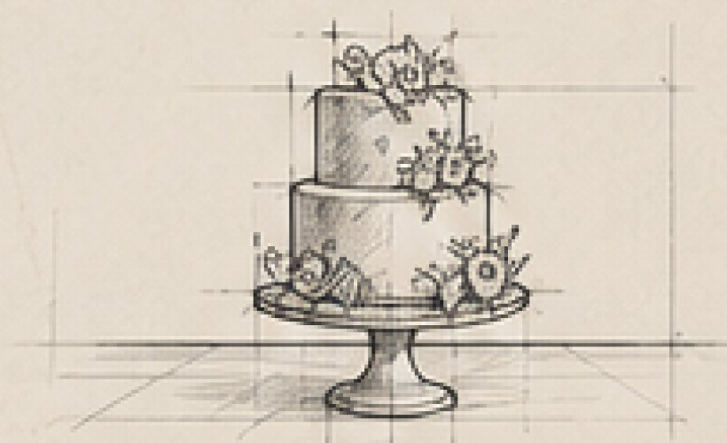
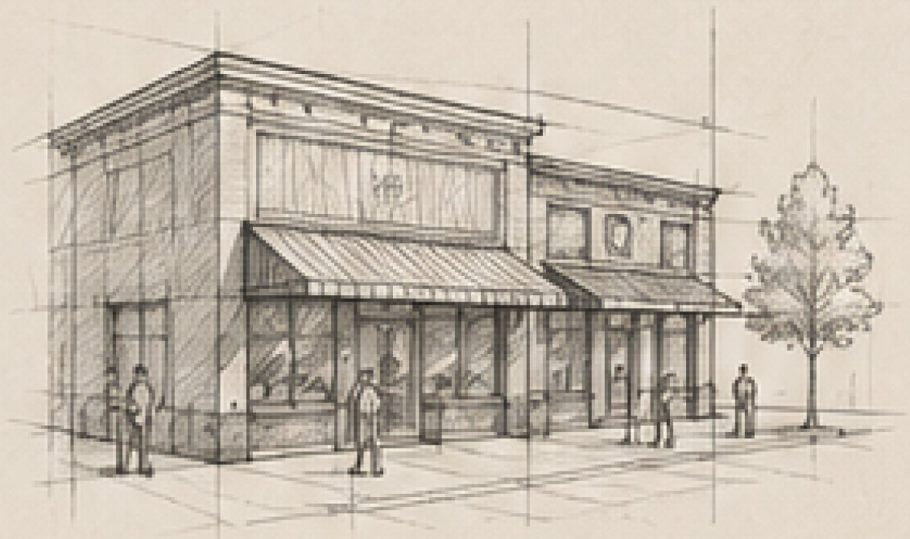
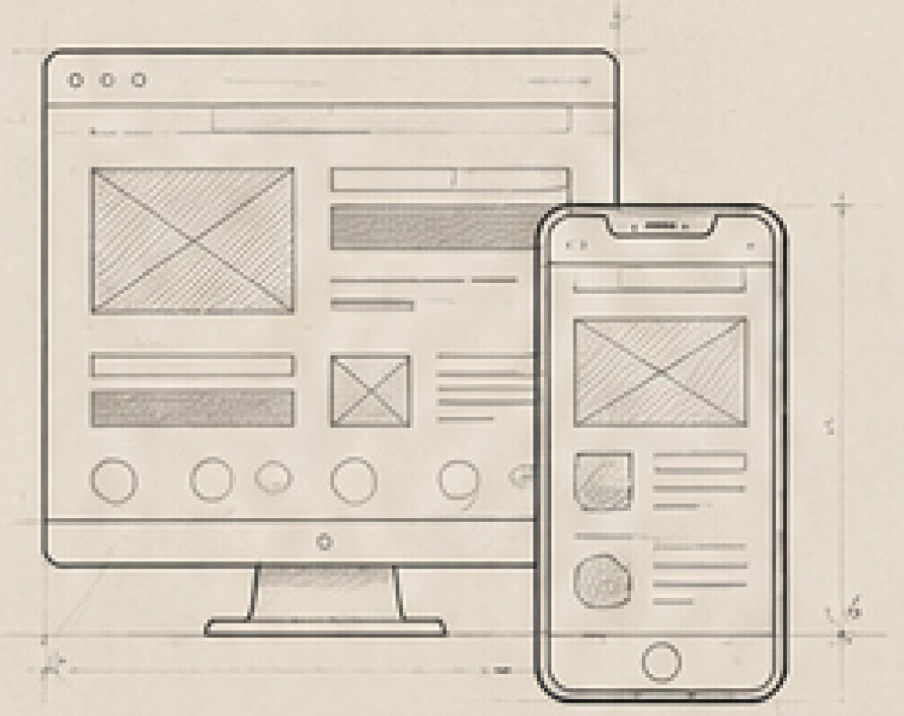
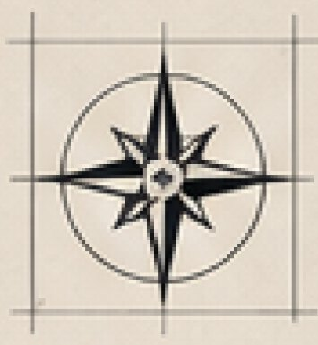

01
Website Redesign
Springfield Church of Christ
Designing for a community where the stakes aren't conversion rates. They're people finding connection and faith they would have missed otherwise.
View Case Study ⟶Practice Notes
Currently redesigning
complex digital systems
through UX, engineering,
and thoughtful documentation.
Thirty years of understanding what people actually need, creating solutions, and delivering something that worked. The case studies below are just the ones with wireframes.
A0.01–A0.05 / Selected Work
01
Website Redesign
Designing for a community where the stakes aren't conversion rates. They're people finding connection and faith they would have missed otherwise.
View Case Study ⟶02
Concept Exploration
A self-directed exploration into whether an interface could identify friction, learn from it, and gradually reshape itself around the people using it.
View Case Study ⟶03
Design Process Innovation
Design thinks better out loud. How AI tools augment the solo design process, from research synthesis to sharper deliverables, without replacing human judgment.
View Case Study ⟶04
Retrospective
Before UX had a name, the same principles applied: understand the client, work within constraints, execute with precision, and know that one structural failure undoes everything.
View Case Study ⟶05
Illustration & Visual Design
The same eye for composition, proportion, and detail that drives the UX work, expressed in watercolor and sugar.
View the Gallery ⟶A0.06 / Field Results
16
Year client partnership
25+
Years of leadership
36
Locations managed, 4 states
4.0
GPA · B.S. Computer Science
Springfield Church of Christ, since 2010 · Retail operations leadership · Tiffin University
A0.07 / Title Block
Most designers studied UX. I was doing it before it had a name.
25 years of operational leadership. IT depth. A 4.0 in Computer Science. Wedding cakes, retail floors, and an ongoing church technology partnership dating to 2010. I came to UX through a longer road than most, and that road is the point.
A0.08 / The Story
Different industries. Same discipline.
Understand people. Remove friction.
Design better experiences.

Craft
Every wedding cake began with deep client research, iterative sketches, and a high-stakes delivery where failure was not an option. I learned to translate someone's vision into a beautiful, tangible experience: on time, on budget, and under extraordinary pressure. Design thinking, baked in from the start.

Leadership
Managing 36 locations across four states taught me that systems only work when the humans inside them are understood. Understanding behavior, removing friction, and designing workflows that scale. That's UX, even when you don't call it that.

UX Design
Understand the user. Design with intention. Deliver something that works. Now I apply that discipline digitally, with Figma, analytics, and a 4.0 GPA in Computer Science backing every decision.


The Through Line
Different industries. Same discipline.
Understand people. Remove friction.
Design better experiences.
Every path I've taken has been about solving complex problems and creating meaningful experiences for real people.
A0.09 / Specification Schedule
A0.10 / Issued for Review
Full resume available for download. 25+ years of cross-industry experience, a 4.0 in Computer Science, and a portfolio that proves UX thinking predates the tools.
A0.11 / Contact
I'm currently open to full-time UX/UI design roles and select freelance projects. If you're building something that needs a designer who can also speak the language of technology and operations, let's talk.